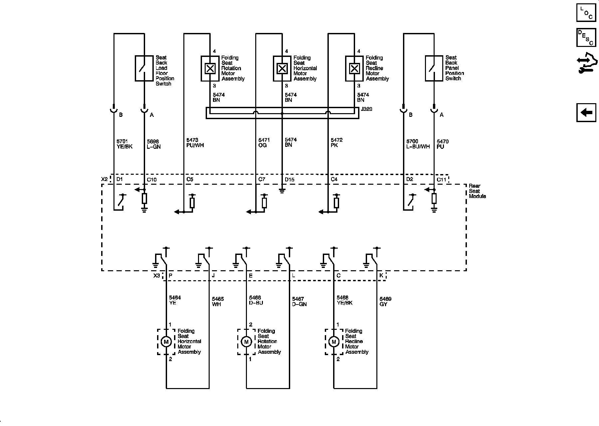

Operation CHARM
: Car repair manuals for everyone.
Home
>>
Cadillac
>>
2008
>>
SRX AWD V8-4.6L
>>
Repair and Diagnosis
>>
Body and Frame
>>
Seats
>>
Diagrams
>>
Electrical Diagrams
>>
Rear Seat Schematics
Rear Seat Schematics
Rear Seat Schematics
Power, Ground, Serial Data and Controls (AM0)
Motors, Sensors, and Position Switches AM0
